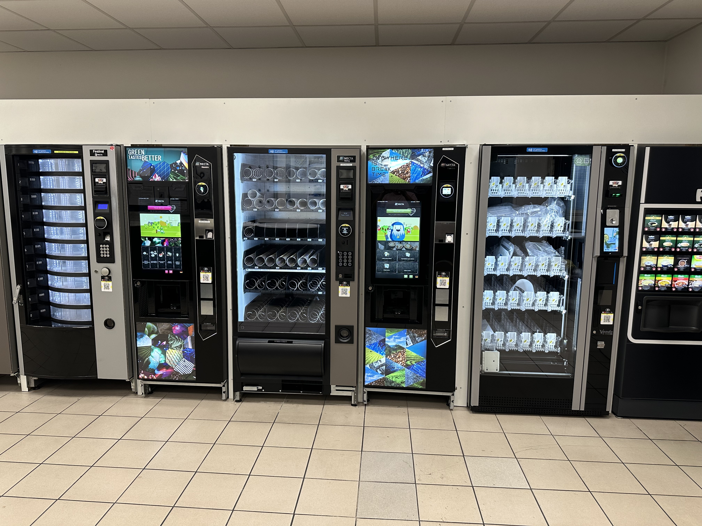
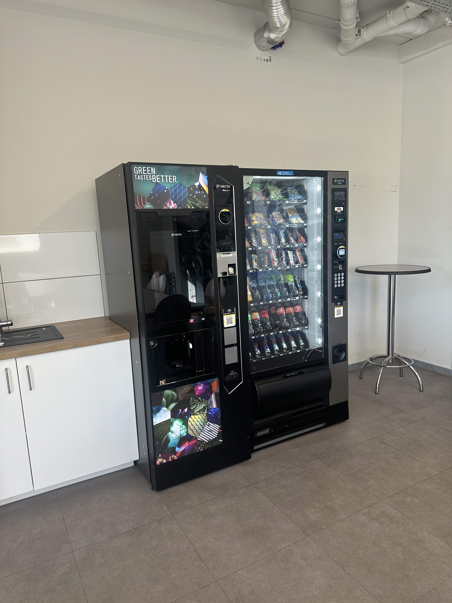
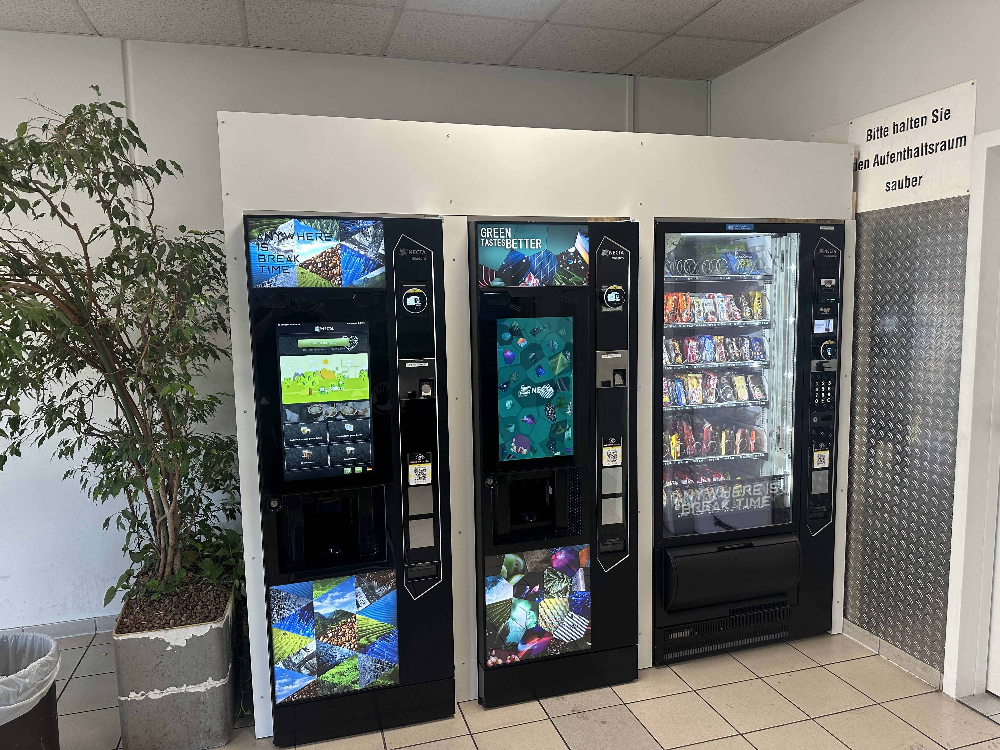
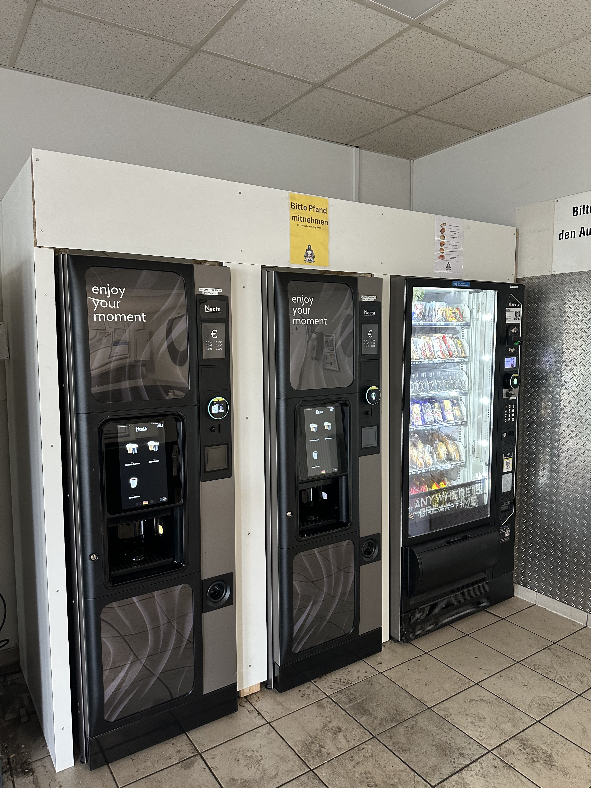
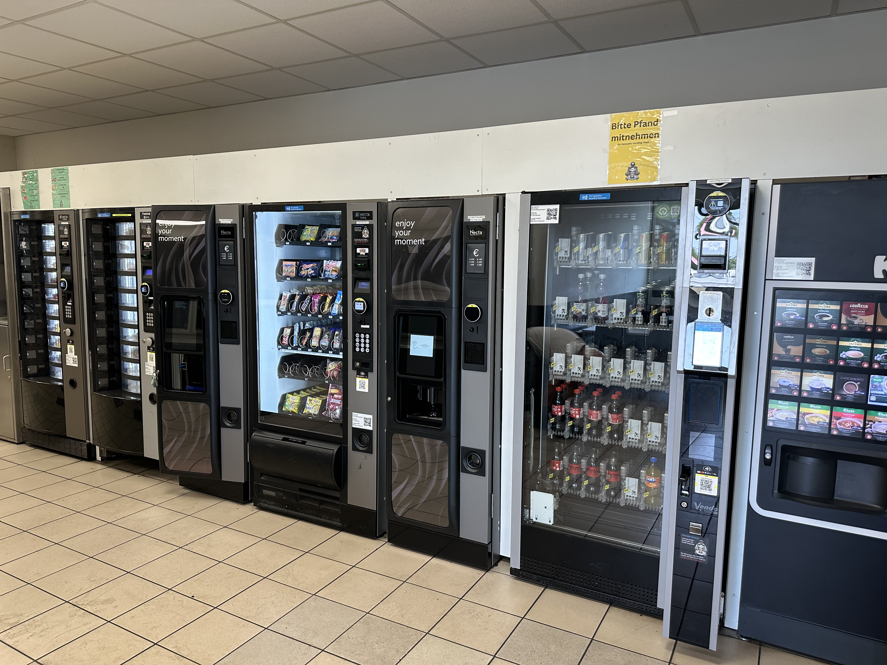
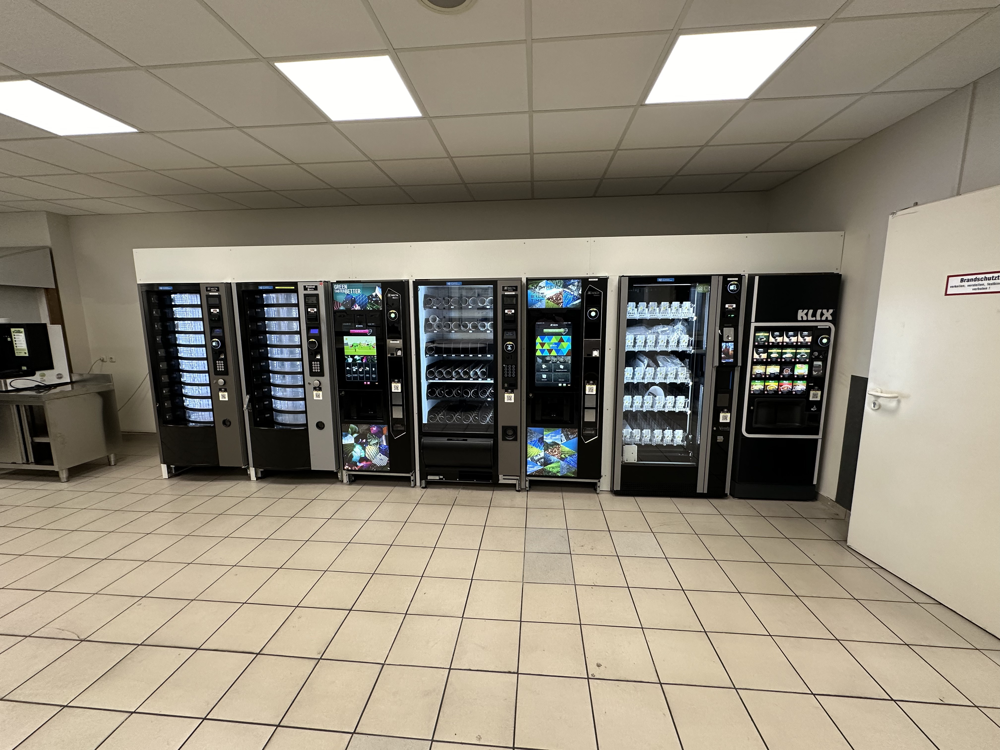
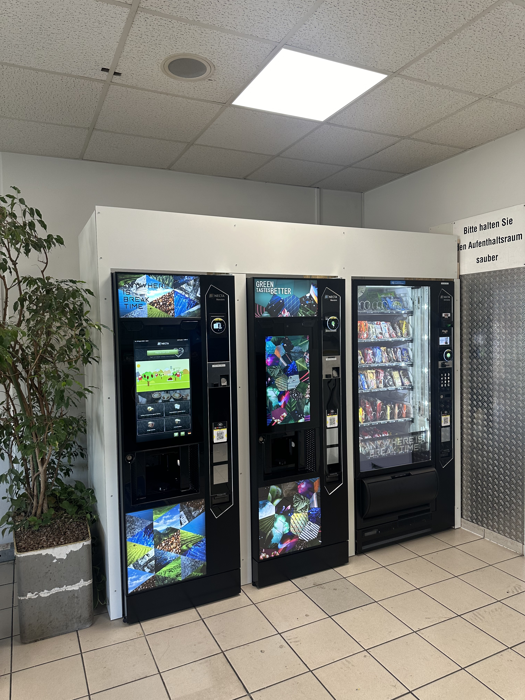
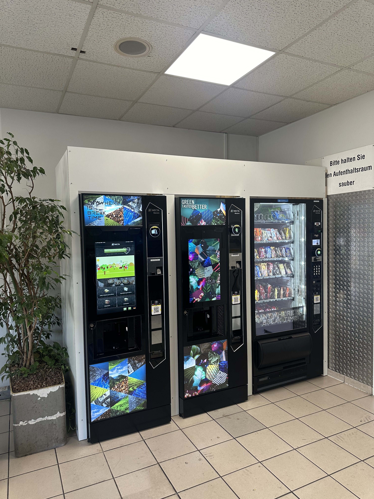
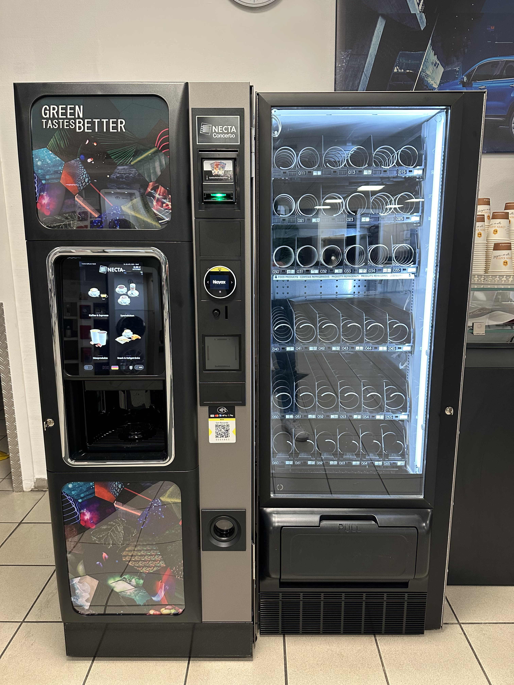
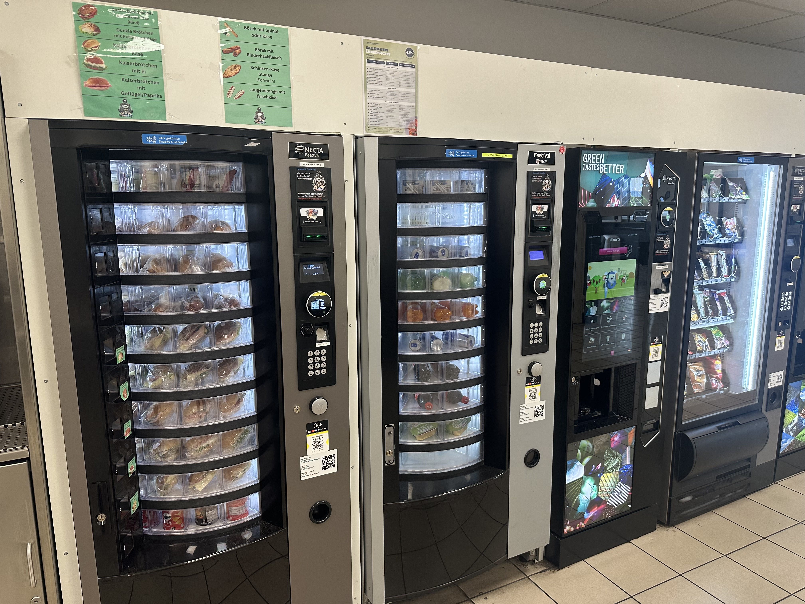

Referenz 01

Automatenlösung im Praxiseinsatz
Einblick in eine unserer umgesetzten Automatenlösungen und die Aufstellung vor Ort.
Automatenlösungen für gewerbliche Standorte und Unternehmen.
Einblicke in unterschiedliche Automatenlösungen für Unternehmen und gewerbliche Standorte. Hier zeigen wir zehn echte Projektaufnahmen. Die Beschreibungen sind bewusst allgemein gehalten, solange keine standortspezifischen Informationen veröffentlicht werden.
Kunden- oder Standortnamen werden nur nach entsprechender Freigabe genannt.

Einblick in eine unserer umgesetzten Automatenlösungen und die Aufstellung vor Ort.

Ein Praxisbeispiel für die individuelle Integration von Verkaufsautomaten am Einsatzort.

Die Aufnahme zeigt eine weitere Automatenlösung aus unserem Projektportfolio.

Ein Eindruck davon, wie sich automatisierter Verkauf in den Standortalltag einfügt.

Praxisaufnahme einer Automateninstallation mit Blick auf die Umsetzung am Standort.

Beispiel aus unserem Sortiment an gewerblichen Automaten- und Verkaufslösungen.

Ein weiterer Einblick in die Aufstellung und Präsentation unserer Automaten.

Aufnahme aus der Praxis: eine Automatenlösung im realen Einsatzumfeld.

Ein Projektbeispiel für die Warenversorgung über Verkaufsautomaten.

Eine weitere Referenz unserer Arbeit mit Automaten für unterschiedliche Einsatzbereiche.
Du planst einen Snack-, Getränke- oder Kaffeeautomaten für dein Unternehmen? Wir beraten dich gerne zu einer passenden Lösung.
Unverbindliches B2B-Angebot anfragen